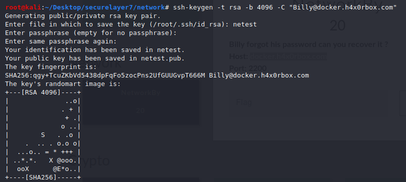

NetworkBy :
[[TRIED IT BUT FAILED]]

Failed!!!!!!!!!!!
./libsshauthbypass.py --host 10.10.10.201 -p 2200
---------------------
to fix ssl error : apt-get install libssl-dev
Config.h - No such file or directory
apt-get install libconfig-dev
pip uninstall paramiko
pip install paramiko==2.0.2
error:
Traceback (most recent call last):
File "exploitdoc.py", line 22, in <module>
cmd_channel.exec_command("whoami; id; ls -la /; ip addr")
File "/usr/lib/python2.7/dist-packages/paramiko/channel.py", line 72, in _check
return func(self, *args, **kwds)
File "/usr/lib/python2.7/dist-packages/paramiko/channel.py", line 257, in exec_command
self._wait_for_event()
File "/usr/lib/python2.7/dist-packages/paramiko/channel.py", line 1226, in _wait_for_event
raise e
paramiko.ssh_exception.SSHException: Channel closed.
solution:
In order for SSHConnection.exec_command() to work, an SSH server has to support exec_command channels, and not every server does. In this case, the server probably rejects the request to open the channel of this type, hence for paramiko it looks like the Channel is closed.
To my knowledge, the only way to interact with such servers is to use invoke_shell().
NetworkF :
Yes! we got the dump, but not the flag 😞
: we got a traffic dump

After analysis found : It had a FTP session related data .
ftp version : vsFTPd 3.0.3
found ftp creds : touhid:mYSecret
AND Found the flag inside
POC :

FLAG : Sl7{FtP-NetwOrK_DuMB}